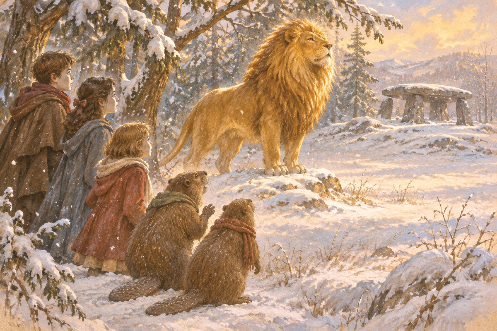
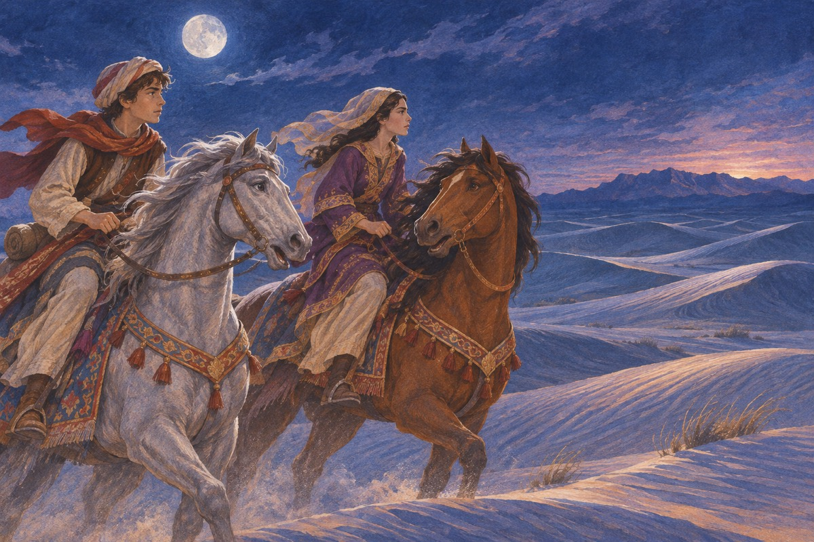
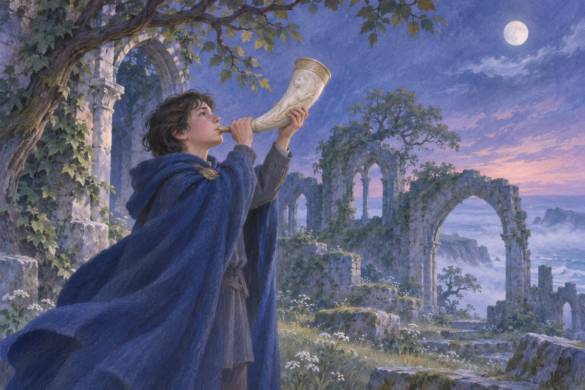
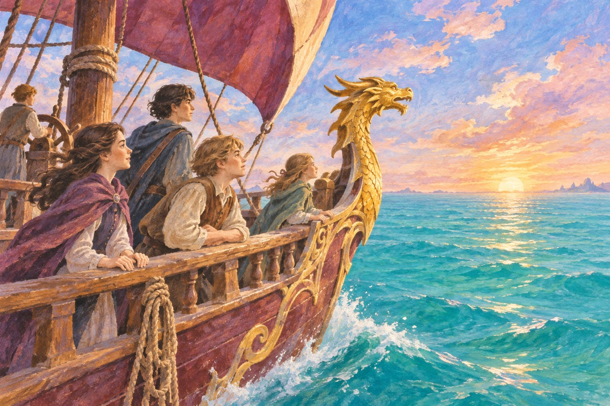
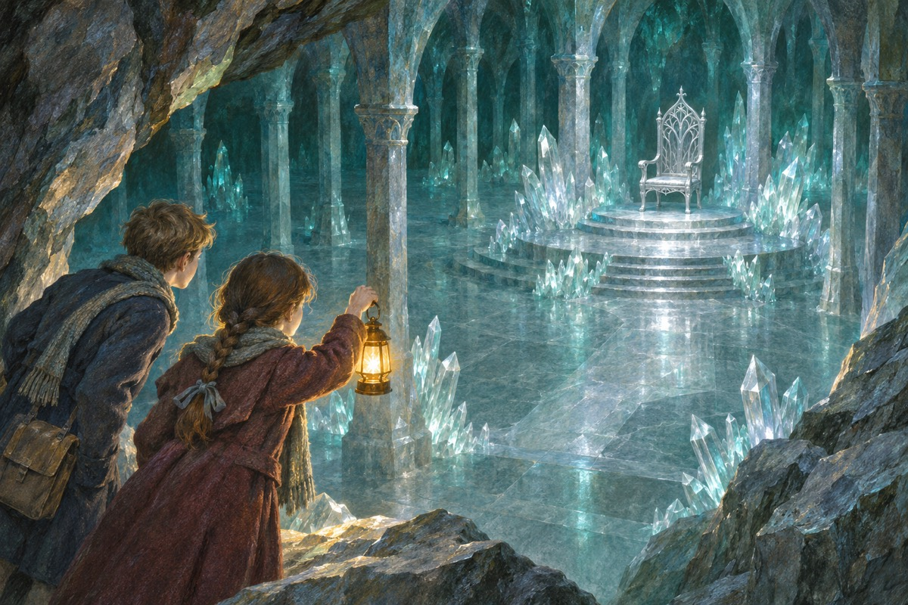
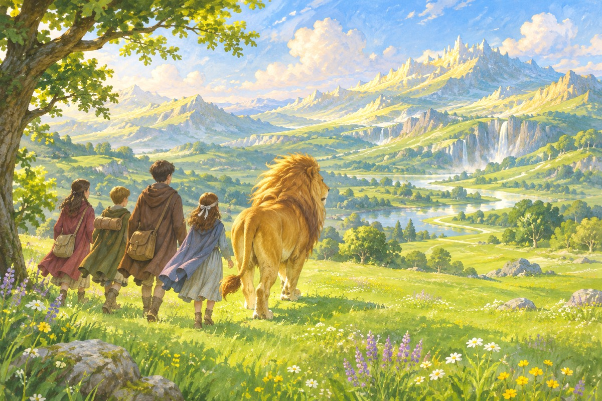

戒指、恰恩与纳尼亚的诞生
安德鲁舅舅的戒指把迪戈里和波莉送往世界之间的树林。那里有通向不同世界的水池，两人在恰恩唤醒女王贾迪丝。为了把她从伦敦带走，他们误入一处空无一物的世界，亲眼看见阿斯兰以歌声创造纳尼亚。迪戈里后来带回一颗苹果治好母亲，苹果核种下的树日后被做成衣柜。
出处 · 《魔法师的外甥》第2–10、13–15章
露西穿过衣柜
战时疏散期间，佩文西家的四个孩子寄住在乡间一位教授家。露西从衣柜进入雪林，在路灯旁遇见半羊人图姆纳斯。他本打算向白女巫交出这个人类女孩，最终让她平安回去。
出处 · 《狮子、女巫和魔衣橱》第1–2章

白女巫的长冬
白女巫以法术让纳尼亚长年停在冬天，却没有圣诞节。她命人为她监视外来者，并把不服从的人变成石像。图姆纳斯因放走露西被捕，四个孩子后来发现他的住处已经被查封。
出处 · 《狮子、女巫和魔衣橱》第2、6章
爱德蒙吃下土耳其软糖
爱德蒙跟着露西进入衣柜，却在雪中与她走散。白女巫给他施过魔法的土耳其软糖，又用继承王位的许诺引诱他把兄妹带来。回到英国后，爱德蒙当着哥哥姐姐的面否认露西的经历。
出处 · 《狮子、女巫和魔衣橱》第3–5章
海狸夫妇带路
海狸夫妇接待四个孩子，告诉他们阿斯兰已来到纳尼亚，并计划带他们赶往石桌。在他们谈话时，爱德蒙偷偷离开，独自投奔白女巫。留下的人不得不在她发现他们之前赶路。
出处 · 《狮子、女巫和魔衣橱》第7–10章

阿斯兰在石桌献身
爱德蒙获救后，白女巫依据远古魔法要求处死这个叛徒。阿斯兰私下同白女巫达成协议，当夜走到石桌，任由女巫的追随者绑缚、剃毛，最后被她杀死。苏珊与露西一直远远跟着，目睹了这一幕。
出处 · 《狮子、女巫和魔衣橱》第13–14章
石桌裂开
黎明时石桌裂为两半，阿斯兰重新站在露西和苏珊面前。更古老的魔法使自愿代替叛徒赴死的无辜者复生。阿斯兰带着两个女孩到白女巫的城堡唤醒化石的人，并带上他们赶去战场。
出处 · 《狮子、女巫和魔衣橱》第15–16章
四位君主加冕
爱德蒙击碎白女巫的魔杖并受重伤。阿斯兰带援军赶来击败女巫，露西用药水救治伤员。四兄妹在凯尔帕拉维尔加冕，在纳尼亚长成大人。《能言马与男孩》的故事发生在他们执政期间。
出处 · 《狮子、女巫和魔衣橱》第16–17章；《能言马与男孩》
沙斯塔与阿拉维斯穿越沙漠
四王在位时，在卡乐门由渔夫养大的沙斯塔随能言马布里向北出走，途中遇到为逃婚而离家的阿拉维斯和能言马赫温。他们穿过沙漠，赶在袭击前向阿钦兰报信。沙斯塔后来认出了自己的身世：他是阿钦兰国王失散的儿子科尔。
出处 · 《能言马与男孩》第1–3、9–11、14章

白鹿引他们回到英国
统治纳尼亚多年后，四兄妹追着白鹿来到灯柱荒野，穿过衣柜回到教授家，重新成了孩子。英国时间几乎没有过去。教授听了他们的经历，认为他们还会再见到纳尼亚，但无法靠反复打开衣柜找到路。
出处 · 《狮子、女巫和魔衣橱》第17章
卡斯宾吹响号角
台尔马人夺取纳尼亚后，在王宫长大的卡斯宾从私人教师那里知道了旧纳尼亚的历史。叔父弥拉兹有了自己的继承人，卡斯宾不得不逃走并与旧纳尼亚居民结盟。部众被围时，苏珊留下的号角召回了四兄妹，他们先在废墟里认出旧王宫。
出处 · 《卡斯宾王子》第1–7章

彼得挑战弥拉兹
彼得向弥拉兹发起决斗，争取时间。弥拉兹跌倒后遭自己的部下刺杀，台尔马人随即把责任推给纳尼亚一方并发动进攻。阿斯兰唤醒的树木赶来扭转战局，卡斯宾继承纳尼亚王位。
出处 · 《卡斯宾王子》第13–15章
黎明踏浪号向东航行
露西、爱德蒙和表弟尤斯塔斯经一幅画登上黎明踏浪号，随卡斯宾寻找失踪的七位勋爵。他们在航程中遇见奴隶贩子、海蛇与隐形居民；尤斯塔斯一度变成龙，由阿斯兰帮助恢复。接近世界尽头时，老鼠瑞皮契普继续向东方划去。
出处 · 《黎明踏浪号》第1、6–8、15–16章

银椅上的王子
阿斯兰交给尤斯塔斯和吉尔寻找瑞利安王子的任务。两人和沼泽怪普德格伦来到地下国，依照阿斯兰留下的记号解开王子，使他得以毁掉银椅。化为巨蛇的绿衣女巫被杀后，瑞利安返回地面，在卡斯宾死前与父亲见了最后一面。
出处 · 《银椅》第2、11–14、16章

马厩前的最后一战
猿猴希夫特把一张狮皮套到驴子拼图身上，假借阿斯兰的名义发号施令，勾结卡乐门人掠夺纳尼亚。吉尔与尤斯塔斯来援，末代国王泰里安及其追随者在马厩旁抵抗；马厩的门通向一片远比外面宽广的国度。
出处 · 《最后一战》第1–2、8–13章
越往里去，越见辽阔
旧纳尼亚在门外迎来终局。阿斯兰带众人看见与旧世界相映的真正纳尼亚，也告诉他们，在英国所乘的列车发生了事故。苏珊没有在这场终局中与兄妹相聚。故事结束于阿斯兰带领众人继续深入这片新天地。
出处 · 《最后一战》第14–16章
